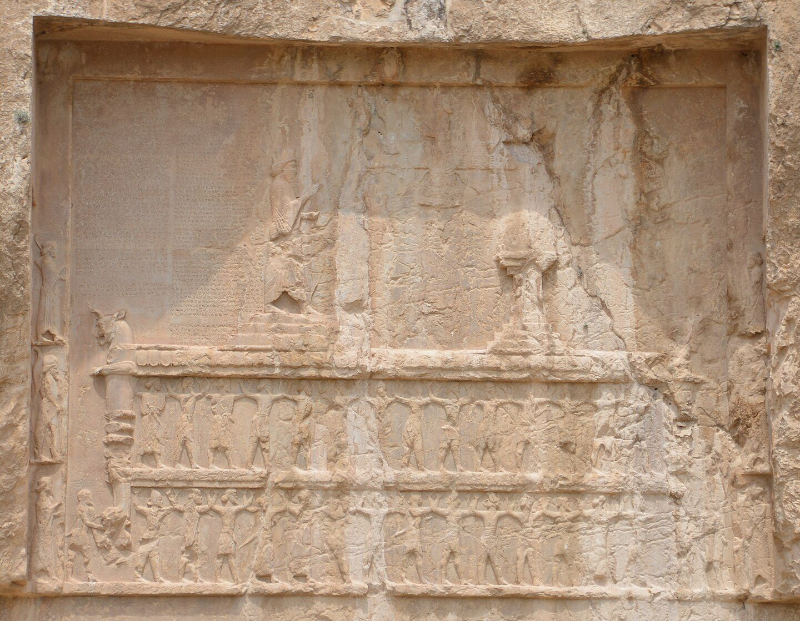
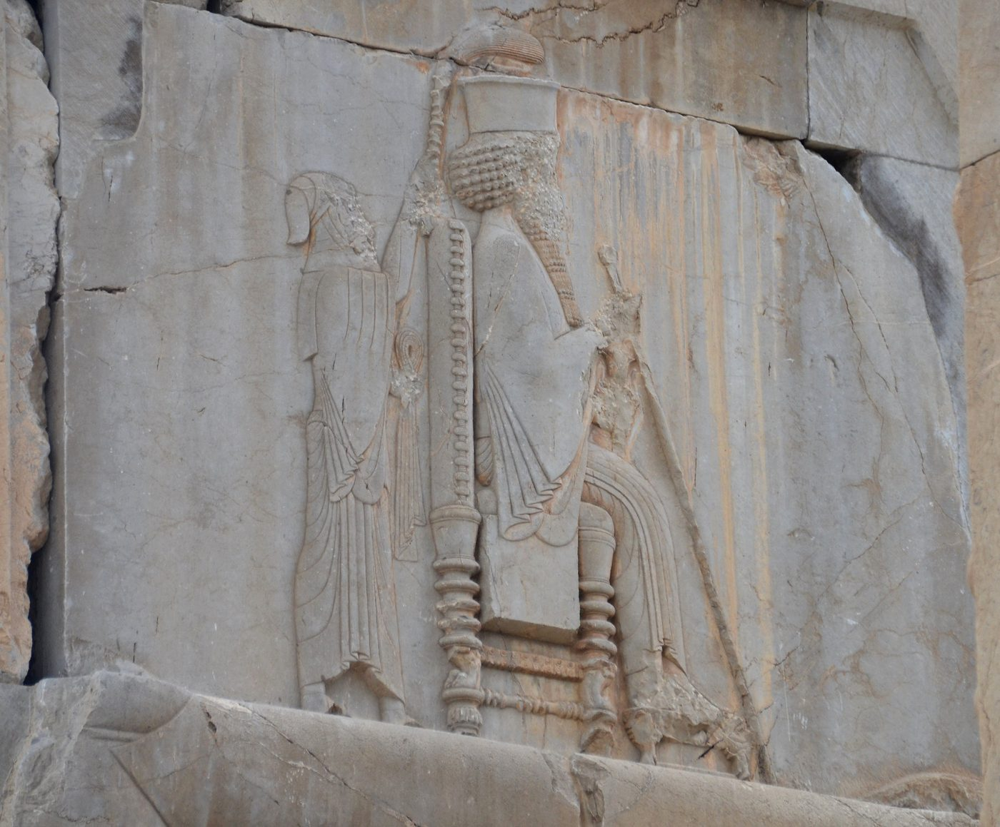
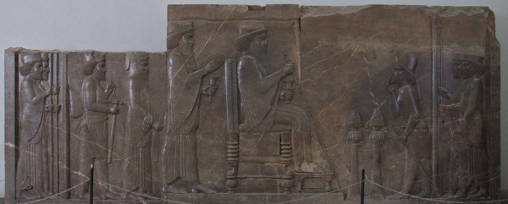
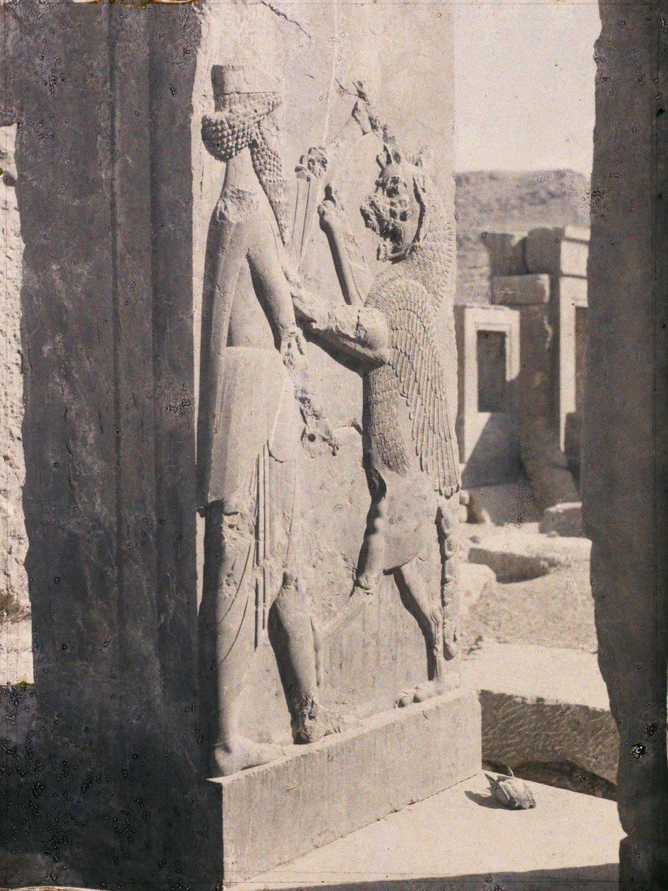
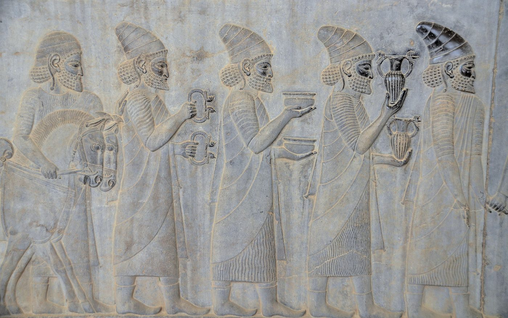

Unit 2 · Persepolis · Lesson 10
A centre of Persian power I: kingship in stone
What did the kings want everyone at Persepolis to believe about their power, and how far can we trust it?
Year 11 Ancient History · Present with → or space · Read on a phone with R

Connect · everyone writes one line · 3 minutes · press K for the timer
Name one feature of Achaemenid design and the tradition it came from
“The … at Persepolis came from the … tradition.”
For example: human-headed winged bulls (lamassu) at the Gate of All Nations: Assyrian guardian figures · Egyptian-style cornices over the doorways: Egypt · fluted columns and fine stone-working: Ionian Greek and Lydian stone-cutters
Then one minute on the Lesson 9 review question most of us found hardest.
Learning intentions and success criteria · 2 minutes
Today’s goals
- analyse how the reliefs and inscriptions present Persepolis as a centre of power
- distinguish power displayed from power exercised
- explain what three sources claim about the king’s power
- integrate two sources in one paragraph
- explain one limit of royal sources as evidence of how power worked
Syllabus outcomes: AH-11-03 explains the role and significance of forces, features, events, individuals and groups in shaping the past · AH-11-05 analyses different types of sources for evidence to support a historical account or argument · AH-11-06 explains differing interpretations and representations of the past · AH-11-07 communicates historical understanding, applying historical knowledge, terms and concepts. Life Skills: AH-LS-06 investigates people, events or developments of the ancient world · AH-LS-08 uses sources to form conclusions about the past.
Note-making · the routine for the whole course
How to structure your notes
questions and key terms, written after
short phrases, arrows (→ leads to), abbreviations (AM = Ahuramazda; DPd = Darius, Persepolis, inscription d)
- 1Rule up the page firstA cue column about a quarter of the page wide; title and date at the top; room for a summary at the bottom.
- 2Listen and look, then writeDon’t copy while a slide is being explained. Phrases, not sentences.
- 3Write your own notes at each ✎ checkpointThen compare with the model notes, one row at a time. Add what you missed in a second colour.
- 4Write the cue questions afterwardsUse exam verbs: explain, analyse, assess. To revise, cover your notes and answer the cues.
- 5Finish with a three-sentence summaryTwo checkpoints today: kingship in stone · the evidence sort and the chain.
Key vocabulary · add to the unit word wall
Words for kingship, and for judging the evidence
| Kingship | Meaning |
|---|---|
| Ahuramazda | The great god of the Achaemenid kings, who claimed to rule by his favour. |
| Truth and the Lie | In royal inscriptions, the order the king protects (truth) against rebellion and disorder (the Lie). |
| Ideology | A set of ideas used to explain and justify power. |
| Throne-bearers | Figures representing the subject peoples who hold up the king’s throne platform in reliefs. |
| Winged disc | A winged symbol carved above the king, often linked with the god Ahuramazda (its exact meaning is debated). |
| Lamassu | A guardian figure with a human head, a bull’s or lion’s body and wings — an Assyrian tradition, used at the Gate of All Nations. |
| The evidence | Meaning |
|---|---|
| Inscription | Words carved or written on a hard surface such as stone, clay or metal. |
| Relief | A carving that stands out from a flat stone background. |
| Foundation tablet | An inscribed tablet buried in a building’s foundations, addressed to the gods and to future kings, not to visitors. |
| Royal hero | A royal figure shown killing a lion, a bull or a monster on palace doorways: usually read as the king, or an ideal, heroic version of him. |
| Power displayed | Power as the king wanted it to be seen: in reliefs, inscriptions, buildings and ceremonies. |
| Power exercised | Power as it actually worked: collecting tribute, paying workers, running officials and armies. |
1 · Kingship in stone · I do — think aloud
Darius on the terrace wall: what power does he claim, and for whom?
A great god is Ahuramazda, the greatest of the gods, who created king Darius and gave him his kingdom. By the favor of Ahuramazda, Darius is king. King Darius: This country Persia which Ahuramazda gave to me is a good country, full of good horses, full of good men. By the favor of Ahuramazda and of me, king Darius, this country fears no other country. King Darius says: May Ahuramazda and the gods of the royal house come to my aid. May Ahuramazda protect this country from invaders, from famine, and from the Lie!
Darius I (king 522–486 BCE) · Old Persian, cut into the southern wall of the terrace, near his Elamite and Babylonian inscriptions · translation as published by Livius.org (“favor” is its spelling)
It continues (DPe) with the lands “which felt fear of me and bore me tribute”: Elam, Media, Babylonia, Arabia, Assyria, Egypt … Maka.
What kind of power does it claim? Power given by a god: Ahuramazda made Darius king, so his rule is religious and political at once.
For whom? For Persia and its people: the king, with the god, keeps the land safe from enemies, hunger and disorder. And to the gods themselves: it ends as a prayer.
Whose voice is missing? Everyone but the king’s: the peoples who paid him tribute, the workers who built the terrace, and the rebels he calls “the Lie”.
Strong evidence of how Darius wanted his rule to be understood: chosen by a god, protecting Persia. Weak evidence of how safe Persia really was, or of what anyone else thought.
1 · Kingship in stone · I do — a link to Unit 1 (Behistun)
Truth against the Lie: the same idea at Behistun

May there never be upon this country an army, famine, or the Lie!
Ahuramazda has granted unto me this empire. […] As to these provinces which revolted, lies made them revolt, so that they deceived the people.
Darius I, rock inscription at Behistun, about 520 BCE · translation as published by Livius.org (adapted from King and Thompson, 1907)
What does ‘the Lie’ mean in Darius’s inscriptions?
Rebellion and disorder: anyone who challenged the king. Truth is the order the king protects, and Ahuramazda gave him the empire, so kingship is presented as a divinely chosen order, and rebels as liars.
1 · Kingship in stone · I do — think aloud
The king raised up by his peoples: what does this relief claim?


What kind of power does it claim? Rule over many peoples: the king sits high above them, and they hold him up. His power rests on the whole empire; on these doorways a winged figure, often linked with Ahuramazda, was carved above him.
For whom? For whoever passed through these doorways (we don’t know exactly who did: the hall’s main entrance was on the north side), and for the king’s successors: a picture of the whole empire calmly holding up its king.
Whose voice is missing? The bearers’ own. They are nameless types of people, not real individuals, and the relief cannot tell us whether anyone carried the king willingly.
If now you shall think that "How many are the countries which King Darius held?" look at the sculptures [of those] who bear the throne, then shall you know …
Tomb of Darius I at Naqsh-e Rustam, about 6 km from Persepolis · translation as published by Livius.org
1 · Kingship in stone · I do → cold call
Power displayed or power exercised?
how the king wanted his power to be seen: reliefs, inscriptions, buildings, ceremonies
how power actually worked: collecting tribute, paying workers, running officials and armies
Which is each of these evidence for? Displayed, exercised, or both?
- 1DPd: Darius asks Ahuramazda to protect Persia “from invaders, from famine, and from the Lie”. Displayed. A claim and a prayer carved for show: it does not tell us whether any invasion, famine or revolt was ever stopped.
- 2The throne-bearers: figures of the subject peoples holding up the king’s platform. Displayed. An image of willing support, not a record of a real event.
- 3A clay tablet from Persepolis recording the grain given to a team of workers. Exercised. An everyday record of the king’s officials at work, never meant for show (Lesson 11).
- 4DPh: gold and silver tablets buried under the Apadana, giving the limits of the kingdom Darius held. Displayed, but to the gods and future kings, not to visitors: a claim about how far his kingdom reached, not a record of ruling it.
Notes checkpoint 1 of 2
Kingship in stone
2 · The evidence sort · We do — pairs · 7 minutes · press K for the timer
Eight sources: what kind of power does each one claim?




Images: A. Davey (CC BY 2.0) · Jona Lendering (CC0 1.0) · Frédéric Gadmer (CC BY 4.0) · Carole Raddato (CC BY-SA 2.0) · 4009dayton (CC BY-SA 4.0) · Carole Raddato (CC BY-SA 2.0). Full details on the last slide.
2 · The evidence sort · We do — check your sort · cold call a pair before each row
Check your sort: most sources claim more than one kind of power
| Source | Best fit | Also | Why |
|---|---|---|---|
| A · DPd | religious | political, economic, military | Ahuramazda made Darius king; he prays against invaders (military), famine (economic) and the Lie, or rebellion (political) |
| B · DPh | political | religious | the lands he rules, “from Sind to Lydia”, given to him by Ahuramazda |
| C · Audience relief | political | — | the king at the centre of an ordered court: an official stands before him, a hand raised to his mouth; attendants and guards stand by |
| D · throne-bearers | political | religious | the peoples of the empire hold the king up; a winged figure (often linked with Ahuramazda) above him |
| E · royal hero | military | religious | royal strength defeating wild and monstrous beasts; set on doorways, probably to guard them against evil |
| F · delegations | economic | political | gifts from every land come to the king: the empire comes to him, in order and at peace |
| G · Gate guardians | religious | military | guardian creatures (an Assyrian tradition) that ward off evil at the main gate visitors came through |
| H · Darius’s tomb | military | political, religious | DNa: “the spear of a Persian man has gone forth far”; thirty peoples carry the king, who prays before a fire altar beneath a winged figure (often linked with Ahuramazda) |
So: in these sources religion, rule, wealth and war are one message: Ahuramazda chose the king, and the whole empire serves him. That message is an ideology, and every one of the eight is power displayed.
2 · The evidence sort · We do — the class builds one chain · cold call each link
One claim–evidence chain, built together
Notes checkpoint 2 of 2
The evidence sort and the chain
3 · You do · check first · gesture vote: one finger = A · two fingers = B
Which sentence integrates two pieces of evidence?
While the human-headed winged bulls at the Gate of All Nations follow Assyrian guardian figures, the fluted columns show the work of Ionian Greek and Lydian stone-cutters, which suggests that Persepolis drew on the skills and traditions of many lands.
B joins the two pieces of evidence in one sentence (while …), says what each adds, and draws a hedged inference (which suggests that). A lists them side by side, and “very mixed” is vague.
3 · You do · plan 3 minutes, then write 12 · press K for the timer
How do the reliefs and inscriptions present Persepolis as a centre of Persian power?
Verb how … present: analyse the way the sources show power, with precise verbs · Topic Persepolis as a centre of power · Limits the reliefs and inscriptions only · Do a claim, two sources integrated with provenance, one limit, a qualified judgement.
- Plan with your claim–evidence chain: a claim, two sources, how they support it, one complication.
- Open with your claim. Integrate two sources, giving each one’s origin.
- Name one limit: power displayed, not power exercised.
- End with a qualified judgement (on balance … probably …).
a claim that answers the question · two sources integrated, with provenance · evaluative verbs (presents, suggests, idealises) · one limit · a qualified final sentence
The reliefs and inscriptions present Persepolis as … · For example, … (source, origin), while … (second source) … · This suggests that … · However, these are royal sources, made to …, so they show power displayed rather than … · On balance, …
Analyse Root’s argument about the throne-bearers (her interpretation is in today’s Check): can art designed as royal display still be good evidence of how power worked? Refer to the Behistun inscription (Unit 1).
3 · You do · compare with a model · two students read theirs first
A model paragraph
The reliefs and inscriptions of Persepolis present it as the centre of an empire whose king was chosen by Ahuramazda and served by every people he ruled. On the Apadana stairs, delegations from across the empire bring gifts in calm, orderly lines, while the Audience relief shows the enthroned king receiving an official, which presents Persepolis as the place where the empire came to its ruler. Darius’s terrace inscription (DPd) explains why this order exists: Ahuramazda “created king Darius and gave him his kingdom”, and Darius asks the god to protect Persia “from invaders, from famine, and from the Lie”, so the king appears as the protector of a god-given order. The throne-bearer reliefs make the same claim in stone, with twenty-eight peoples lifting the king high above them, and Darius chose the same image for his own tomb, which suggests that this message was deliberate and meant to last. However, these are royal sources, made by the king’s craftsmen to show how he wanted his power to be seen: they show power displayed, not power exercised, and they leave out the voices of the peoples they depict. On balance, they are strong evidence of how Persepolis was presented as a centre of royal power, but on their own they can probably tell us little about how that power actually worked, which needs other evidence, such as the administrative tablets.
Check for understanding · gesture vote: thumbs up = agree · sideways = not sure · down = disagree
A modern historian on the throne-bearers, then a vote
Perhaps we shall never be able to determine absolutely whether the Achaemenid reliefs should be read as a pure metaphor of royal power or as a metaphorical description of an actual ceremonial display of imperial might. But … the motif of the king carried by anonymous representatives of the subject peoples of the empire … was certainly designed to convey in its role as art a political message of calculated significance … a new vision of hierarchical order and kingship-on-earth …
Margaret Cool Root, a historian of ancient Near Eastern art (University of Michigan), The King and Kingship in Achaemenid Art (Leiden: Brill, 1979), p. 161 · “metaphor”: a picture of an idea, not of a real event
“The reliefs show what really happened at Persepolis.”
Disagree, mostly. Root argues the throne-bearers were designed to send a political message, and she leaves open whether they show any real ceremony. The reliefs are strong evidence of how the kings wanted their power to be seen, but they cannot show what happened on any day, or how willingly the peoples served. Some scenes may echo real court ceremonies: other evidence is needed to test that.
Finish your notes If time · or at home
Summary: three sentences
- How do the reliefs and inscriptions present the king’s power?
- What does Root argue about the throne-bearers?
- Why are royal sources limited evidence of how power worked?
Darius’s inscriptions and the reliefs of Persepolis present the king as chosen by Ahuramazda to protect a god-given order against “the Lie”, with every people of the empire bringing gifts to him or holding up his throne. Root argues that the throne-bearer motif was deliberately designed to send a political message about the king’s place at the top of an ordered world, whether or not it shows a real ceremony. Because these sources were made by and for the king, they show power displayed rather than power exercised, and they leave out the views of the peoples they depict.
Exit ticket · 5 minutes · before you leave
One sentence about today’s sources
“These sources are reliable for … but …”
The sources named (the throne-bearer reliefs, DPd, the delegations …); what they are reliable for (how the kings wanted their power to be seen: their claims and their image); and what not, with a reason (how power actually worked, or what the subject peoples thought, because they were made by and for the king).
Then check yourself against today’s three “I can” statements. Next lesson: the Fortification and Treasury tablets: power at work.
Practice and review · 1 of 3 · true, false, justify
True or false? Justify your answer
- 1In DPd, Darius asks Ahuramazda to protect Persia from invaders, famine and the Lie. True — and he claims Ahuramazda “gave him his kingdom”.
- 2The throne-bearer reliefs prove that the subject peoples carried the king in real ceremonies. False — they show an ideal; Root says we may never know whether they picture a real ceremony at all.
- 3In Darius’s inscriptions, ‘the Lie’ means rebellion and disorder against the king’s order. True — at Behistun he says “lies made them revolt”.
- 4The DPh tablets were set up for visitors to the Apadana to read. False — they were buried in the foundations, addressed to the gods and to future kings.
- 5Root argues that the throne-bearer motif was designed to send a political message. True — “a political message of calculated significance”.
- 6Because they were made for the king, royal reliefs are useless to historians. False — reliable for what? Strong evidence of how the kings wanted power to be seen; weak evidence of how it worked.
Practice and review · 2 of 3 · writing
Write it as a historian
Rewrite as one sentence: “The throne-bearers hold up the king. On his tomb Darius tells us to look at the sculptures.”
The throne-bearer reliefs show the subject peoples lifting the king high above them, and on his tomb Darius tells the reader to “look at the sculptures [of those] who bear the throne” to learn how many countries he held, which suggests that the motif was meant as a picture of his empire rather than a record of an event.
Finish: “The Audience relief is reliable for … but not for … because …”
The Audience relief is reliable for how the kings wanted their court to be seen, as calm, ordered and centred on the throne, but not for what any real audience was like, because it was carved by the king’s craftsmen to show an ideal.
Rebuild it as evidence → a precise verb → what it suggests, with a hedge: The royal hero relief has a king fighting a monster.
The royal hero relief on the palace doorways presents the king defeating a monstrous beast, which may suggest that royal strength was imagined as guarding the palace against evil. (A model, written for this lesson: presents, not has; then a hedged which may suggest that.)
Can art designed as royal display still be good evidence of how power worked? Use Root and the Behistun inscription (Unit 1).
Art designed as royal display can still be good evidence of how power worked, but only indirectly. Root argues that the throne-bearer motif was “certainly designed to convey … a political message of calculated significance”, so the reliefs are first of all evidence of a message: a king lifted up by all his peoples. Yet the message itself tells us something about power, because it shows what the kings needed their subjects, visitors and successors to believe, and what they spent great resources to show. Behistun points the same way: when Darius says that “lies made them revolt”, he presents rebels as liars, which reveals that his rule faced real revolts even as it denied that they were legitimate. Royal display is therefore weak evidence of events or of the subjects’ feelings, but useful evidence of the ideology through which power was exercised, especially when it is tested against everyday records such as the tablets.
Practice and review · 3 of 3 · cover your notes and answer from memory
Quick checks
- What does DPd ask Ahuramazda to do? Protect Persia “from invaders, from famine, and from the Lie”.
- What does ‘the Lie’ mean in Darius’s inscriptions? Rebellion and disorder against the king’s god-given order; at Behistun, “lies made them revolt”.
- Describe the throne-bearer motif, and where it appears. The king on a platform held up by figures of the subject peoples: in the Throne Hall and the Tripylon at Persepolis (28 peoples), on Darius’s tomb at Naqsh-e Rustam (30, labelled), and on the later royal tombs, which copy his.
- What does Root argue about the motif? It was designed to send a political message: “a new vision of hierarchical order and kingship-on-earth”, whether or not it shows a real ceremony.
- Distinguish power displayed from power exercised. Displayed: how the king wanted his power to be seen (reliefs, inscriptions). Exercised: how it actually worked (tribute, rations, officials).
- Give one limit of royal sources as evidence of how power worked. They were made by and for the king, so they show his claims and image, not daily rule or what the subject peoples thought.
Sources and credits
Where everything comes from
Darius I, inscriptions DPd, DPe and DPh (Persepolis), DNa and DNe (Naqsh-e Rustam), and the Behistun inscription, sections 9 and 54: translations as published by Livius.org (Jona Lendering, after P. Lecoq, 1997; its DNa follows R. G. Kent’s translation, Old Persian, in modern English; Behistun adapted from L. W. King and R. C. Thompson, 1907), quoted briefly, with credit; © Livius.org. Facts about the buildings: Livius.org, ‘Persepolis’ photo pages and ‘Naqš-e Rustam’.
Margaret Cool Root, The King and Kingship in Achaemenid Art: Essays on the Creation of an Iconography of Empire, Acta Iranica 19 (Leiden: Brill, 1979), p. 161, quoted briefly, with the catalogue (pp. 73, 81, 98, 107) for facts. © the author and publisher.
Outcomes and content: NSW Education Standards Authority (NESA), Ancient History 11–12 Syllabus (2024). © NESA.
E. F. Schmidt, The Treasury of Persepolis and Other Discoveries in the Homeland of the Achaemenians (Chicago: Oriental Institute, 1939); Science News, 15 August 1936; Livius.org, ‘Persepolis, Apadana, North Stairs, Central Relief’.
Teacher resource: Persepolis.pdf, Source 9, the Root extract (class notebook ‘Persepolis’).
- The upper register of the tomb of Darius I, Naqsh-e Rustam · Photo: Carole Raddato · CC BY-SA 2.0 · source
- The Behistun relief of Darius I · Photo: Patrick C (dynamosquito on Flickr) · CC BY-SA 2.0 · source
- The king enthroned, southern doorway of the Hall of a Hundred Columns · Photo: Carole Raddato · CC BY-SA 2.0 · source
- Throne-bearers, Hall of a Hundred Columns · Photo: Jona Lendering (Livius.org) · CC0 1.0 · source
- An Audience relief from the Apadana, found in the Treasury (National Museum of Iran) · Photo: A. Davey · CC BY 2.0 · source
- The royal hero and a winged monster, Tachara (autochrome, 1927) · Photo: Frédéric Gadmer, 14 September 1927 (Musée départemental Albert-Kahn, Département des Hauts-de-Seine, A53279S) · CC BY 4.0 · source
- A delegation bringing gifts, Apadana eastern stairway · Photo: Carole Raddato · CC BY-SA 2.0 · source
- The Gate of All Nations, eastern doorway · Photo: 4009dayton · CC BY-SA 4.0 · source
.jpg){kind=link}

_depicting_an_enthroned_king_and_attendant,_Persepolis,_Iran_(47098456004).jpg){kind=link}

_(4734172156).jpg){kind=link}
.jpg){kind=link}

All images are public domain or openly licensed, and were resized for the web (the tomb, the royal hero, the throne scene and the Audience relief were also cropped). Each image is shared under the licence shown.